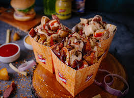
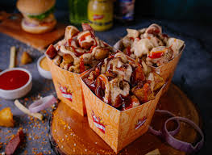

I'm David Leiter, the guy behind this website. I'm an American who's been traveling the world full time for 9 years now. I started this travel blog in 2019 to document my own international trips, share my photos, and help others learn how to travel the world and find some really good spots off the beaten path. All of the writing and pictures on this site come from my own personal experience. My second home is Bali, Indonesia, where I met my wife Intan, who’s a Bali local. Now she joins me on these adventures too. Together, we've done some bucket list hikes, climbed active volcanoes, seen exotic wildlife, and visited some spectacular castles, temples, and monuments around the world. I've worked with and been featured by BBC Travel, NBC News, Time, and other companies. I haven’t been everywhere, but it’s on my list. I hope this world travel blog can help and inspire you in your own journeys as well!

 
